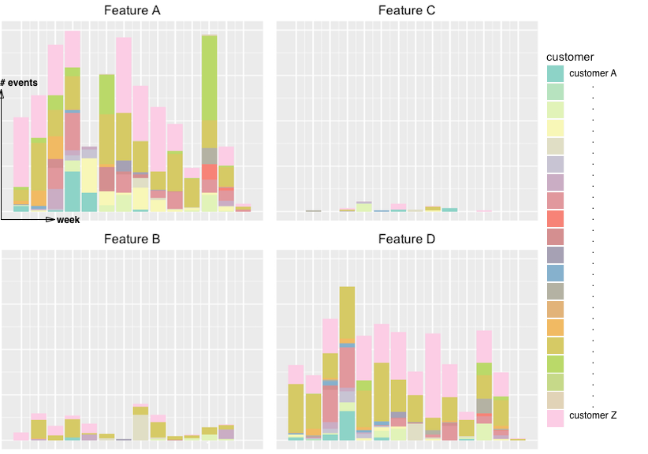

Problem
Product teams need to build products that are useful to users.
But how do you know that what you build is useful?
One way to get closer to an answer is to assess product usage. Product usage can be a signal of demand for your product.
Because the product team at Wrap Media did not have that signal initially, they were unable to decide quickly and confidently which features to prioritize for the roadmap and future iterations.
Approach
I set out to collect, measure, and visualize product usage to empower the product team to make those decisions.
As a team, we came up with guiding principles for the project:
-
Actionability - product usage data would be used to prioritize which existing features should be iterated upon, and which new features should be added to the roadmap.
-
Clear definition - usage would be defined as a click event on a particular feature - for example clicking export on our data export button.
-
Granularity - usage would be reported on a weekly basis, starting in the week the feature was available to a general audience.
-
Customer context - the data would be segmented by customer to understand who is (not) using a feature.
Using a REST API, R, and SQL, I applied the principles to create a product dashboard that showed feature usage on a weekly basis.
Impact
The dashboard was included in the weekly operational reviews where the product leaders reported the health of their respective domains.

Right away, you can see that Features A and D see quite a bit more usage than Features B and C. Visualizations like this can bring a lot of insight to a product team. For example, Product Managers at Wrap Media no longer had to guess which features in the product were being used more than others.
Product acted on these insights to prioritize roadmap planning and product iterations.
--
Details
At Wrap Media, all our event data was collected by FullStory, and available through their Rest API. As a team, we came up with a plan to measure product usage.
Extract
I used Hadley Wickham's httr package to extract data bundles from the FullStory REST API.
list_response <- GET(listURL ,add_headers("Authorization" = paste("Basic", api_key)))
data <- GET(getURL, add_headers("Authorization" = paste("Basic", api.key)))
I then used Hadley's tidyr package to create a dataset out of the bundles.
ds <- (bind_rows(
lapply(
list.files(
"file_path",
pattern = "bundle.gz",
full.names = TRUE
),
fromJSON
)
)) %>%
arrange(desc(EventStart))
Prepare
Next, I excluded internal users so that a QA engineer testing a feature for example would not bias the feature usage measurement.
ext_only <- filter(
ds,
!(grepl("wrap.co", UserEmail) & UserEmail != "design@wrap.co")
& !grepl("argodesign.com|mauricio.andrada@gmail.com",
UserEmail)
)
Then I created the different segments for our main customers.
customer <- ext_only %>%
mutate(customer = case_when(
(grepl("customer_A_email", ext_only$UserEmail)) ~ "Customer A",
(grepl("customer_B_email", ext_only$UserEmail)) ~ "Customer B",
(grepl("customer_C_email", ext_only$UserEmail)) ~ "Customer C",
)
Visualize
The data was then visualized using ggplot2, and displayed in a dashboard.
Product acted on these insights to prioritize roadmap planning and product iterations.